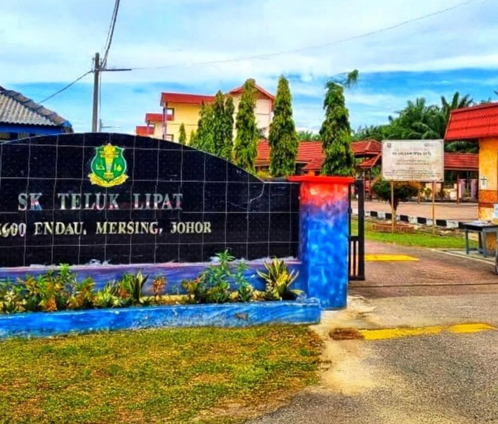
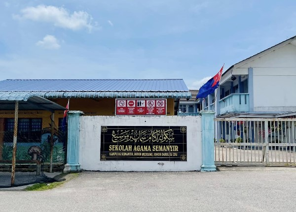
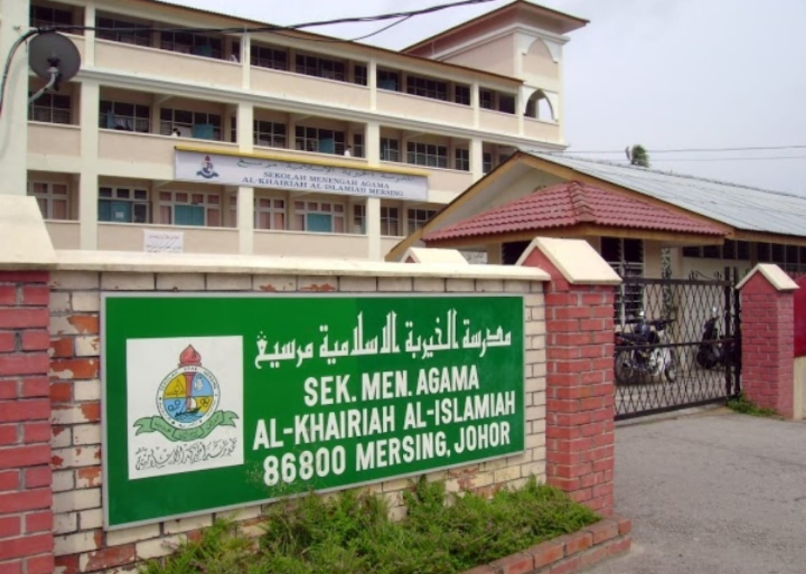
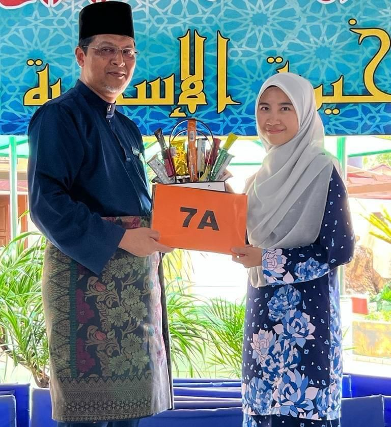
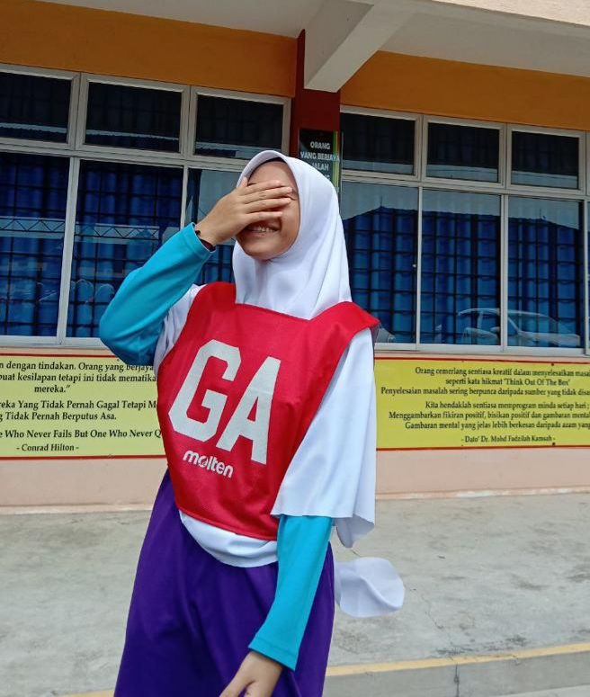

My Academic Journey 💐
Primary School (Age 6-12)
2010-2017
1) Sekolah Kebangsaan Teluk LipatClick the photo to explore more. I completed my primary education here, where I developed my academic foundation and communication skills. I was fortunate to have supportive teachers and friends who made learning enjoyable and encouraged my curiosity. These experiences helped shape my early love for learning. |
2) Sekolah Agama SemanyirClick the photo to explore more. I attended afternoon religious school, where I learned Quranic studies, Jawi, and Islamic values. Balancing both schools taught me early discipline and time management. The lessons I learned here helped me build a strong moral foundation and guided my personal growth. |
High School (Form1-Form5)
2018-2023
1) SMA Al-Khairiah Al-Islamiah, MersingClick the photo to explore more. I continued my studies in an Islamic secondary school environment.Throughout
these years, I was surrounded by supportive teachers and friends who
guided me, especially in core subjects like Arabic and Mathematics, which
were my favourite subjects in high school. I am truly grateful to have
been surrounded by such kind and helpful people. |
Achievements and Involvements:I successfully achieved 7As in SPM, which remains one of my proudest academic milestones, reflecting the hard work, dedication, and perseverance I put into my studies. I also represented my school in netball, an experience through which I learned collaboration,commitment and the importance of teamwork in achieving common goals. These experiences not only shaped my academic and personal growth but also taught me valuable lessons in responsibility. Here is a picture of me receiving my SPM award and representing my school in netball 👇   |
|